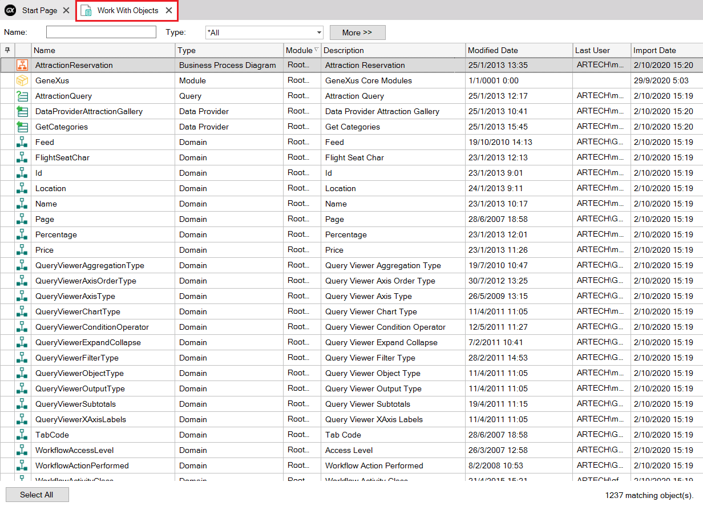

The Work With Objects tool window, as its name describes it, lists and lets you work with the GeneXus objects defined in your Knowledge Base.  You can search for objects by name and/or type as well as other advanced filters. You can also order the objects list by the different columns. The attributes shown as a result of your search can be selected (with both single and multiple selections) to take an action of the contextual menu. To open the Work With Objects window, select View > Work With objects in the main GeneXus menu.
|
| Backlinks |
| Category:Module object |